Looking at SMF Data for Problem Determination
Audience level
Some knowledge of MQ or z/OS
Skillset
MQ Administration, z/OS systems programming
Background
MP1B is a utility provided by IBM to help analyze IBM MQ for z/OS performance data. It reads MQ-related SMF records and can format them for review or export them to CSV for further analysis.
MP1B can be installed from IBM support resources. In this lab environment, it has already been installed for you.
Out of the box, MP1B contains:
MQCMD- a program to display queue statistics and channel status over timeMQSMF- a program for interpreting MQ accounting and statistics dataOEMPUT- a program to put or get large volumes of messages, which is useful for throughput testing
Overview of the exercise
In this lab, you will:
I. Set up the local queue MP1B.TESTER
II. Make sure the queue manager is configured to record the SMF data you need
III. Run JCL to generate and capture SMF data
IV. Navigate the formatted SMF output to identify a performance issue
V. Interpret the problem and relate it to the queue manager configuration
Video tutorial of the exercise: Link
Prerequisites
Before you begin, make sure the following are available:
- Access to the
ZQS1.MP1B.JCLdata set - A running queue manager
ZQS1 - MQ Explorer access to
ZQS1 - Authority to issue MQ commands and submit jobs through ISPF and SDSF
- Access to the MP1B sample jobs
OEMPUT,SMFDUMP, andMQSMFP - The correct Julian date for the day on which you run the lab
- Permission to alter queue manager attributes temporarily for the purpose of the exercise
Note: This lab intentionally changes queue manager settings such as
STATIME,ACCTIME, andLOGLOADto produce visible effects in the SMF data. These values are suitable for a controlled lab, but not necessarily for a production environment.
Exercise
I. Create the test queue
- MP1B has already been installed in this environment. You can find it by searching for the data set
ZQS1.MP1B.JCLin ISPF option3.4.
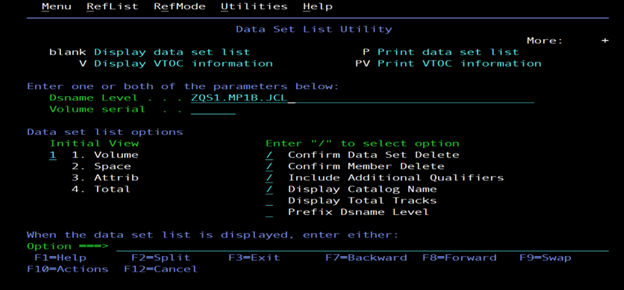
- Open MQ Explorer on your Windows desktop.
- In MQ Explorer, right-click the
ZQS1queue manager and select Connect.
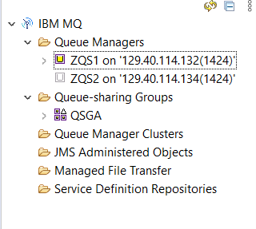
- Expand
ZQS1, right-click the Queues folder, and create a new local queue calledMP1B.TESTER.
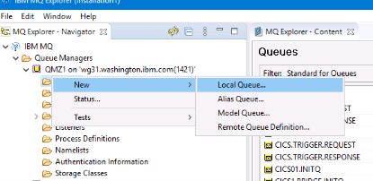
- Create the queue with the properties shown in the following example:
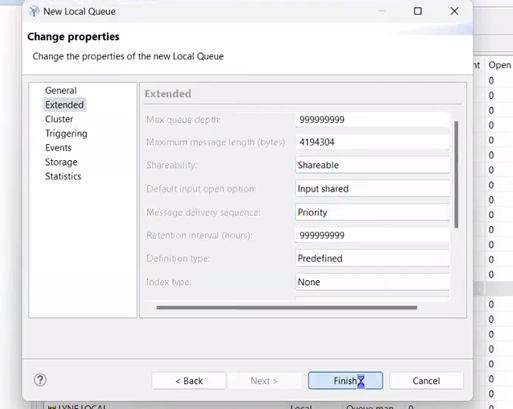
Why make the queue shareable? In a lab environment, shareable queues are convenient because multiple users or tools can browse them.
- Once the queue has been defined, return to z/OS.
II. Configure the queue manager for SMF collection
-
You will now enter a series of MVS commands to adjust the queue manager configuration so that the resulting SMF data is easier to analyze.
-
From the ISPF main menu, enter
Dto open SDSF. -
In SDSF, enter
/in the command input line and press Enter to open the system command extension window. -
A command prompt like the following should appear:
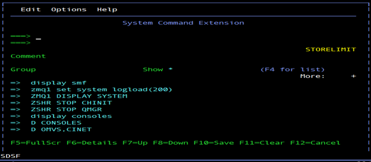
- Enter the following commands one at a time. After each command, you may need to reopen the system command extension window with
/.
ZQS1 SET SYSTEM STATIME(1.00)
This changes the statistics interval to one minute.
ZQS1 SET SYSTEM ACCTIME(-1)
This changes the accounting interval so that it follows the statistics interval.
ZQS1 SET SYSTEM LOGLOAD(200)
This sets the LOGLOAD attribute to a very low value.
In this lab,
LOGLOAD(200)is intentionally low so that the queue manager performs frequent checkpoints. This makes the effect visible in the SMF data.
DISPLAY SMF
This shows where the SMF data is being recorded.
ZQS1 ALTER QMGR STATCHL(MEDIUM)
This enables channel statistics collection at a moderate level.
ZQS1 ALTER QMGR MONQ(MEDIUM)
This enables queue monitoring at a moderate level.
ZQS1 ALTER QMGR MONCHL(MEDIUM)
This enables channel monitoring at a moderate level.
ZQS1 START TRACE(STAT) CLASS(1,2,4,5)
ZQS1 START TRACE(ACCTG) CLASS(3,4)
- At this point, the queue manager should be configured to generate the SMF data needed for the exercise.
III. Generate workload and dump SMF data
-
Return to
ZQS1.MP1B.JCLusing ISPF option3.4. -
Open the
OEMPUTmember by enteringEnext to it.
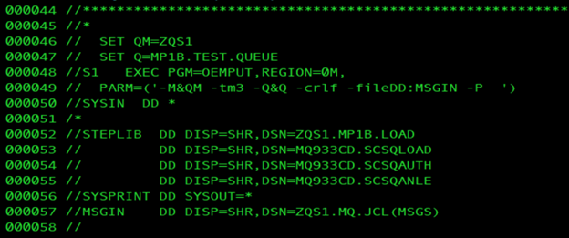
-
Verify that the queue manager name and queue name are correct in the member.
-
Submit the
OEMPUTjob to load persistent messages into the queue. -
The following
PARMline is especially important:
PARM=('-M&QM -tm3 -Q&Q -crlf -fileDD:MSGIN -P')
Meaning of the parameters:
| Parameter | Meaning |
|---|---|
-M&QM |
Queue manager name |
-tm3 |
Send messages for 3 minutes |
-Q&Q |
Queue name |
-crlf |
Use each input line as a separate message |
-fileDD:MSGIN |
Use the MSGIN DD as input |
-P |
Use persistent messages |
- In MQ Explorer, you should now see that
MP1B.TESTERis populated with many messages.
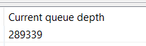
- Back in
ZQS1.MP1B.JCL, open theSMFDUMPmember and submit it. This job deletes old output if needed and then writes the relevant SMF data to the target data set, which in this environment isZQS1.QUEUE.MQSMF.SHRSTRM2.
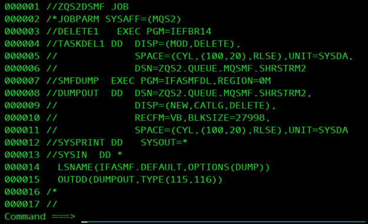
-
To confirm that
SMFDUMPis processing, use SDSF. From ISPF, enter=D. -
In SDSF, select
STand press Enter. -
Enter the following command:
PREFIX ZQS1*
This shows the submitted jobs that begin with ZQS1.
-
Place a
?next to the job name and press Enter. Then place anSnext toSYSPRINTand press Enter. -
Enter
BOTTOMon the command line. You should see output similar to the following, indicating that records are being written. You can also confirm this by locating the SUMMARY ACTIVITY REPORT.
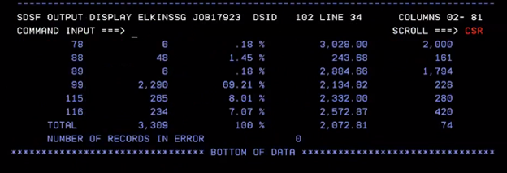
IV. Format and review the SMF data
-
After
SMFDUMPcompletes, open theMQSMFPmember inZQS1.MP1B.JCL. -
Before submitting the job, make sure the Julian date is correct for the day of the lab. For example, for 24 February 2025, the Julian date is
25055. -
Submit
MQSMFP.
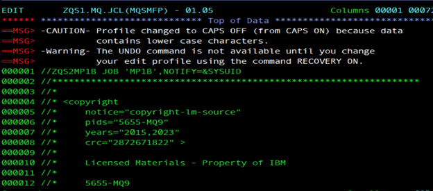
- Navigate to the SDSF output for the submitted job. This output presents the SMF data in useful categories and can also be used to generate CSV-style output for later analysis.
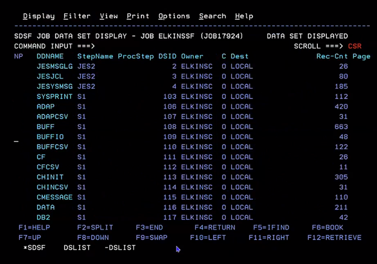
-
Select the LOG statistics section by placing an
Snext to it and pressing Enter. -
Scroll until you see a screen similar to the following:
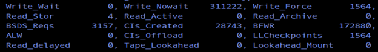
-
Review the
LLCheckpointsvalue. In the lab example, it is1564. For such a short interval, that is extremely high. In a more typical interval, you would expect the value to be zero or a small single-digit number. -
This result indicates that the queue manager is checkpointing far too frequently. In this lab, that behavior is caused by the intentionally low
LOGLOADsetting.
V. Interpret the performance issue
- The
LOGLOADparameter specifies how many log records are written between checkpoints.
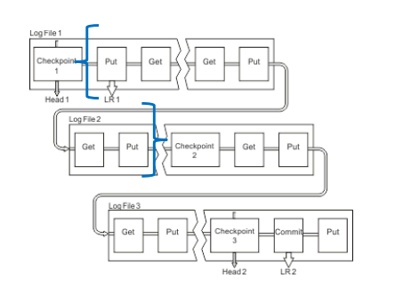
-
In the diagram above, the
LOGLOADinterval is shown by the blue brackets. In a real environment, a value as low as the one shown in the illustration would be unrealistically small. -
In this lab, you set the queue manager
LOGLOADattribute to the minimum value of200and then generated a heavy message workload. That combination caused a very high checkpoint frequency in the SMF window. -
Excessive checkpointing increases processor usage and I/O activity. The performance conclusion for this lab is that
LOGLOAD(200)is too low for the workload you generated.
Validation checklist
Before considering the lab complete, confirm the following:
MP1B.TESTERwas created successfully- The queue manager settings were changed successfully
OEMPUTloaded persistent messages to the queueSMFDUMPcaptured the relevant SMF dataMQSMFPformatted the SMF data successfully- The
LOG statisticssection showed theLLCheckpointsvalue - You were able to relate the high checkpoint count to the low
LOGLOADvalue
Troubleshooting
If the lab does not work as expected, check the following:
- MQ Explorer is connected to
ZQS1 MP1B.TESTERwas created on the correct queue manager- The
OEMPUTmember references the correct queue manager and queue SMFDUMPcompleted successfully and wrote records to the expected data set- The Julian date in
MQSMFPis correct - The queue manager tracing and monitoring commands were accepted successfully
- The workload actually ran long enough to generate noticeable SMF data
- You are viewing the
LOG statisticssection, not a different section of the formatted report
Common symptoms and causes:
- Queue depth never increases:
OEMPUTmay have been pointed at the wrong queue or queue manager SMFDUMPshows little or no activity: tracing or monitoring may not have been enabled correctlyMQSMFPoutput is empty or incomplete: the wrong Julian date may have been usedLLCheckpointsis low: the workload may have been too small, orLOGLOADwas not changed successfully- MQ Explorer cannot browse the queue: the queue may not have been created, or the queue manager is not connected
Cleanup
This lab changes queue manager settings to values that are useful for demonstration but are not ideal for normal operation. After the lab, consider restoring the queue manager settings to your environment's normal values.
At a minimum, review and reset these attributes if needed:
ZQS1 SET SYSTEM STATIME(...)
ZQS1 SET SYSTEM ACCTIME(...)
ZQS1 SET SYSTEM LOGLOAD(...)
ZQS1 ALTER QMGR STATCHL(...)
ZQS1 ALTER QMGR MONQ(...)
ZQS1 ALTER QMGR MONCHL(...)
You may also want to remove the MP1B.TESTER queue after the exercise if it is no longer needed.